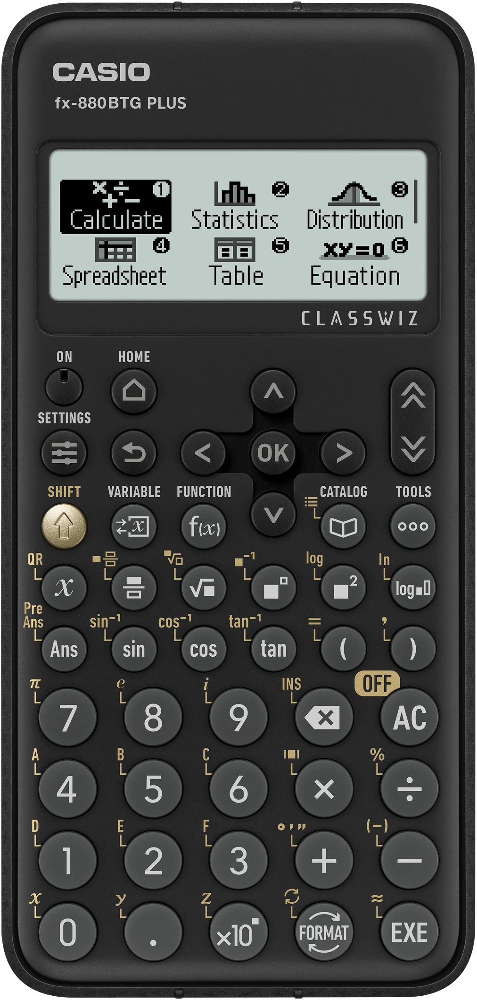
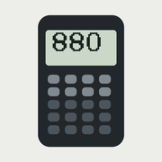

Bấm phím trên máy tính để bắt đầu.
fx-880BTG PLUS Emulator (Demo)
Đang kiểm tra dữ liệu ngoại tuyến…
Màu vỏ và cài đặt được giữ trên thiết bị này. Các phím trên máy và bàn phím PC luôn dùng chung cách tính.
Nhấn HOME để chọn ứng dụng, EXE để tính, DEL để xóa một ký tự và AC để trở lại màn nhập. SHIFT gọi chức năng màu vàng.
Bấm trực tiếp các phím trên máy hoặc dùng bàn phím máy tính.
Phím SHIFT chỉ tác động lên lần bấm kế tiếp. Nhấn HOME để chuyển nhóm tính năng.
Đóng cửa sổ này để tiếp tục bấm phím.
Mô tả lỗi và chuỗi phím giúp BITEX kiểm tra lại. Chỉ gửi khi bạn bấm nút bên dưới.
Để trống
Phép tính chạy trên thiết bị, không gửi tự động. Nội dung góp ý, chuỗi phím và ảnh bạn chọn chỉ được gửi cho BITEX qua Netlify khi xác nhận gửi.
LUÔN SẴN TRONG THIẾT BỊ
Mở từ một biểu tượng. Tính toán cả khi mất mạng.
Máy tính đã được cài hoặc đang mở từ biểu tượng ứng dụng. Có thể xem hướng dẫn cho thiết bị khác bên dưới.
Sao chép đường dẫn trang này và mở trong Safari. Không cài từ trình duyệt bên trong Zalo hay Facebook.
Bấm biểu tượng Chia sẻ, rồi chọn Thêm vào Màn hình chính. Có thể cần mở nút ⋯ hoặc cuộn danh sách để thấy mục này.
Bật Mở dưới dạng ứng dụng web nếu có, rồi bấm Thêm. Trở về màn hình chính và mở biểu tượng 880BTG PLUS.

Mở đường dẫn máy tính trong Chrome. Sau đó bấm nút ⋮ cạnh thanh địa chỉ.
Chọn Cài đặt và tạo lối tắt → Cài đặt. Một số phiên bản ghi Thêm vào màn hình chính.
Làm theo cửa sổ xác nhận. Sau đó mở 880BTG PLUS từ màn hình chính hoặc danh sách ứng dụng.
Dùng được trên Windows và macOS. Giữ kết nối mạng trong lần mở đầu tiên.
Bấm nút bên dưới và xác nhận khi trình duyệt hỏi. Nếu chưa hiện cửa sổ, dùng mục cài ứng dụng trong menu trình duyệt.
Mở biểu tượng 880BTG PLUS. Máy tính chạy trong cửa sổ riêng; dùng bàn phím PC để nhập số và phép tính.
Trong Safari, chọn Tệp → Thêm vào Dock, rồi xác nhận Thêm (macOS Sonoma trở lên).
Hình minh họa thao tác; vị trí và tên nút có thể khác theo phiên bản trình duyệt.
Mở từ biểu tượng vừa cài khi còn mạng. Chờ thông báo sẵn sàng bên dưới, rồi tắt mạng và thử 7 × 8 = 56.
Gửi góp ý và ảnh cần có mạng. Nếu thiết bị đã xóa dữ liệu ứng dụng, hãy mở lại khi có mạng để tải đủ chương trình.